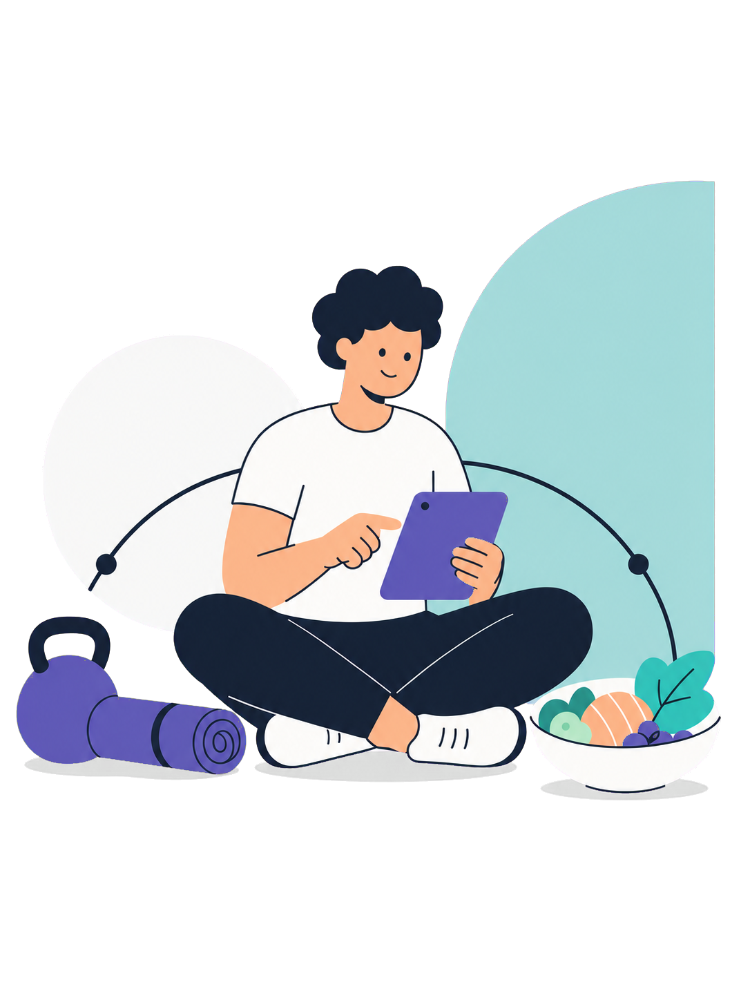
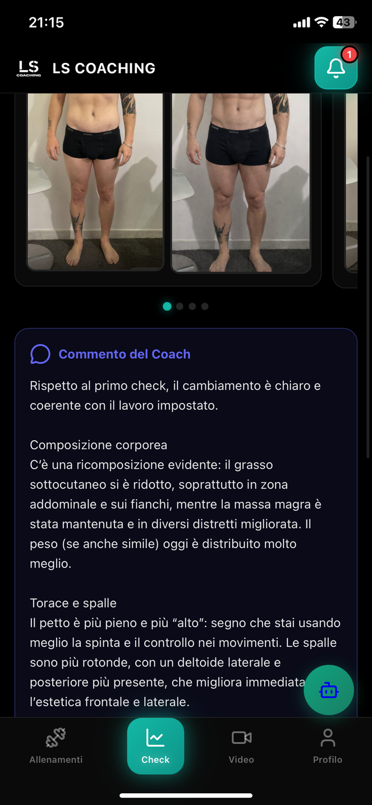
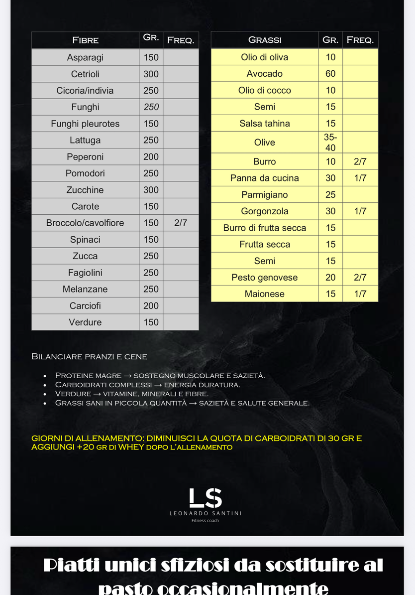
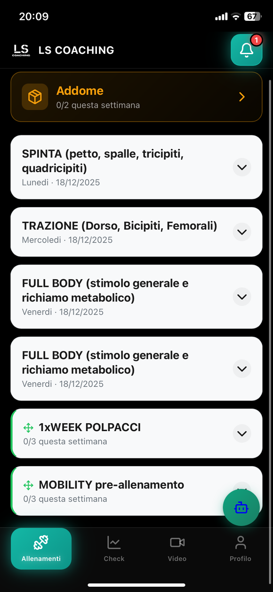
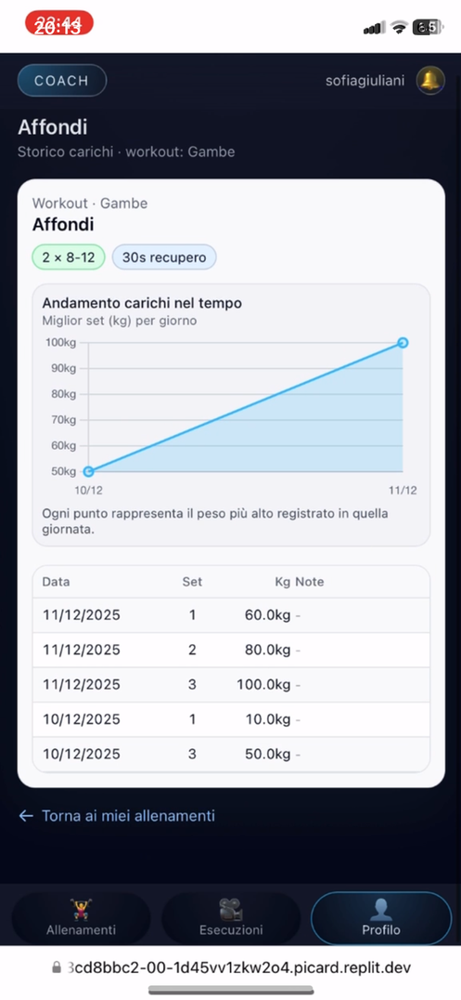
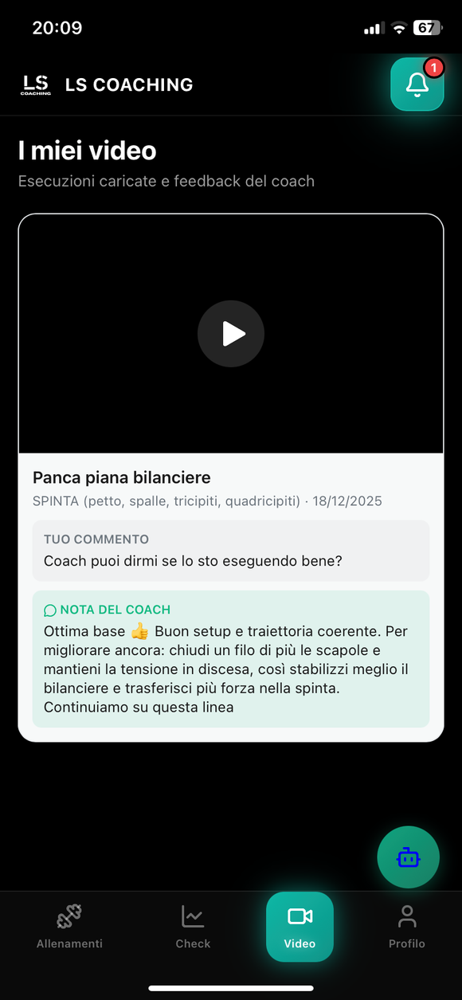
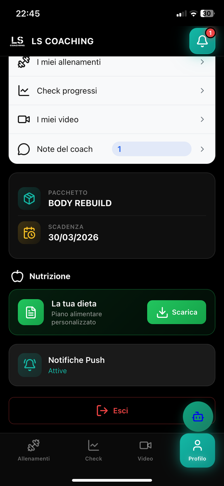
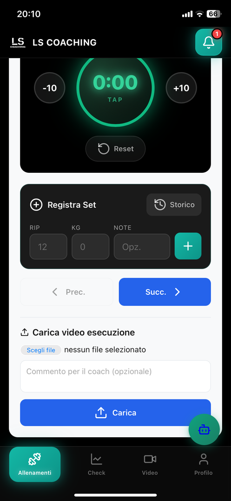

★★★★★
“Finalmente allenamento e alimentazione hanno una logica unica: so cosa fare e perché lo sto facendo.”
Metodo chiaroIl tuo prossimo nutrizionista è su Theia. Inizia con un incontro gratuito, poi decidi se continuare. Trasforma questa nella tua ultima dieta.

Cosa pensano i clienti
“Finalmente allenamento e alimentazione hanno una logica unica: so cosa fare e perché lo sto facendo.”
Metodo chiaro“I check mi aiutano a leggere peso, fame, energia e performance senza andare nel panico.”
Monitoraggio vero“Il percorso resta sostenibile anche nelle settimane difficili, perché viene adattato alla mia routine.”
Supporto praticoMetodo, aderenza e controllo continuo: la differenza è nel percorso.
Ma chi sarà il tuo coach e nutrizionista?
Una sola guida per leggere insieme allenamento, alimentazione, recupero, fame, stress e aderenza. Il percorso Premium nasce proprio per non separare ciò che nella vita reale è collegato.
 Coach & nutrizionista online
Coach & nutrizionista onlineIl tuo referente
Personal trainer e nutrizionista con 2 lauree, certificazioni professionali e circa 10 anni di esperienza: coordino programma di allenamento, piano alimentare, check e modifiche dentro un unico metodo.
Non lavoro consegnando una scheda da una parte e un piano alimentare dall’altra. Prima analizzo la persona: condizione iniziale, composizione corporea, esperienza, routine, preferenze, abitudini alimentari e ostacoli che in passato hanno reso difficile essere costante.
Il mio metodo integra allenamento, nutrizione e monitoraggio: trasformo i dati in una strategia sostenibile, poi la aggiorno con peso, misure, foto, performance, fame, energia e aderenza, così il percorso evolve insieme alla tua vita reale.
Sì, ma il metodo cosa fa?
Ogni scelta viene valutata con criterio: non ti consegno una dieta e una scheda separate, ma un sistema che si aggiorna quando cambia la tua vita.
Prenota un incontro gratuito Analisi continuaAllenamento, nutrizione e abitudini nello stesso quadro.
Analisi continuaAllenamento, nutrizione e abitudini nello stesso quadro.Lasciarti gestire allenamento e alimentazione da solo non ha senso. Per questo puoi scrivermi quando ti serve: basta un messaggio su WhatsApp.
Creo la combinazione giusta di metodo, semplicità e tecnologia per ridurre ogni ostacolo lungo il tuo percorso, mettendoti al centro e aiutandoti a raggiungere i tuoi obiettivi.
Sì, ma quanto costa?
Base
Allenamento online
Per chi vuole iniziare con una guida tecnica.
Premium
Percorso completo
Per coordinare dieta, training e controlli.







Parla con me: capiamo se ti basta il Base o se ha senso integrare anche la nutrizione.
Prenota un incontro gratuitoScopri anche
Ce lo chiedono spesso
Partiamo da una consulenza gratuita, raccogliamo dati, foto, misure, abitudini e preferenze, poi costruisco un piano integrato con check ogni due settimane.
Sì. Gli aggiornamenti fanno parte del percorso: il piano cambia quando cambiano dati, aderenza, fame, recupero, performance o routine.
Lo capiamo in consulenza. Se ti basta il Coaching Base te lo dico; se alimentazione e allenamento devono essere coordinati, allora ha senso il Premium.